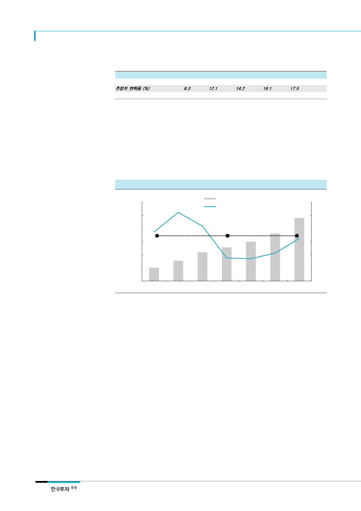

SK하이닉스(000660)
하지만 데이터 트래픽 증가율
자체는 둔화
<표 2> 전세계 데이터 트래픽 추정치 변경
(단위: 1개월 당 페타바이트(Petabyte)
추정 시기
2017년 6월
추정치 변화율 (%)
2016년 6월
2016
96,054
8.3
88,719
2017F
121,694
12.1
108,533
2018F
150,910
14.2
132,101
2019F
186,453
16.1
160,561
2020F
228,411
17.5
194,374
2021F
278,108
주: CISCO의 데이터 트래픽 관련 보고서는 매년 발간되며, 2017년 6월 7일에 발간된 보고서가 가장 최근 추정치임
자료: CISCO, 한국투자증권
데이터 트래픽은 지속적으로 증가하지만 증가율은 둔화될 전망이다. 데이터 트래픽 증가를
주도하는 동영상 콘텐츠의 트래픽 증가율이 낮아지고 있기 때문이다. 데이터 트래픽 증가 속
도가 최근 높아지고는 있지만 장기적으로는 2010년~2013년 연평균 증가율 37% 에서
2014년~2016년 연평균 23%로 낮아졌다. 서버디램의 채용량 증가율도 2010년~2013년 연
평균 56%로 높았지만 이후 2014년~2016년 채용량 증가율은 연평균 28%로 낮아졌다. 시
스코의 중장기 데이터 트래픽 증가율 전망도 점차 낮아지는 추세다.
[그림 10] 전세계 데이터 트래픽 추이 및 증가율
(1개월 당 페타바이트 수)
120,000
100,000
전세계 데이터 트래픽 (좌)
데이터 트래픽 YoY 증가율 (우)
80,000
60,000
고성장
저성장
40,000
20,000
0
2010
자료: CISCO, 한국투자증권
2011
2012
2013
2014
2015
(%)
60
50
40
30
20
10
0
2016
데이터 트래픽의 지속적인
증가가 기대된다면
서버수요가 회복해야 함
3. 서버수요 회복이 서버디램 수요증가 지속의 전제
데이터 트래픽 증가로 인한 서버디램 수요강세가 지속되기 위해서는 결국 서버수요가 회복되
어야 한다. 서버수요의 회복 없이는 서버디램 채용량 증가에 한계가 있기 때문이다. xSP업체
들에게 데이터 트래픽은 수요다. 수요회복에 대한 확신이 서버 및 서버디램 구매로 이어질
것이다. 서버디램의 수요강세는 예상 외의 데이터 트래픽 증가에 대응하기 위한 부품구매로
해석할 수 있다. 데이터 트래픽에 대한 전망이 긍정적이라면 서버수요 전망도 상향되겠지만
최근까지도 전 세계 서버수요 전망은 여전히 밝지 않다. 물론, xSP의 서버구매 비중은 지속
적으로 높아지겠지만 이들의 수요 증가가 일반 기업의 수요 감소를 상쇄하고 전체 서버시장
을 성장시킬 정도에는 미치지 못한다.
6